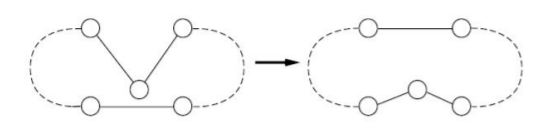
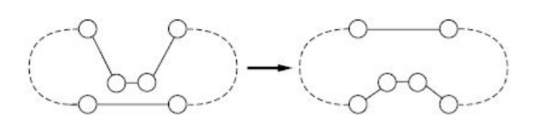
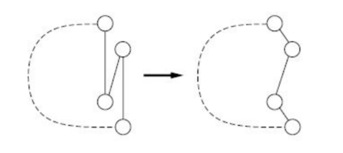

Traveling Salesman Problem
The Traveling Salesman Problem (TSP) asks the following question: given a list of cities and the distances between each pair, what is the shortest possible route that visits every city exactly once and returns to the starting city?
This is one of the most studied problems in combinatorial optimization. It is NP-hard, meaning that no efficient algorithm is known for solving it exactly in all cases. In practice, heuristics are used to find good (though not necessarily optimal) solutions.
This page is based on work I did in 2018, which you can find in this repository.
Construction heuristics
Construction heuristics build a tour from scratch by adding one city at a time. They are fast and produce reasonable solutions, which can then be improved with optimization techniques. The four algorithms below differ in how they choose which city to add next, and where to insert it in the partial tour.
Nearest Neighbor
The simplest construction heuristic. It is greedy: at each step, it travels to the closest unvisited city.
- Start from a random city.
- Travel to the nearest unvisited city.
- Repeat until every city has been visited.
This algorithm is fast ($$O(n^2)$$) but tends to produce tours with crossing edges, especially toward the end when few cities remain and the nearest one may be far away.
Nearest Insertion
Instead of building a path one edge at a time, insertion heuristics maintain a partial tour (a closed loop) and repeatedly insert a new city into it. Nearest insertion selects the unvisited city that is closest to any city already in the tour.
- Start with a tour consisting of a single random city.
- Selection: find the unvisited city k that minimizes $$d(k, j)$$ for some city j already in the tour.
- Insertion: find the edge $$(i, j)$$ in the tour such that inserting k between i and j causes the smallest increase in tour length, i.e. minimizes $$d(i, k) + d(k, j) - d(i, j)$$.
- Repeat until every city has been visited.
Cheapest Insertion
Cheapest insertion considers all unvisited cities and all possible positions at once. It picks the (city, position) pair that results in the smallest increase in tour length.
- Start with a tour consisting of a random city and its nearest neighbor.
- Among all unvisited cities k and all edges $$(i, j)$$ in the tour, find the combination that minimizes $$d(i, k) + d(k, j) - d(i, j)$$.
- Insert k between i and j.
- Repeat until every city has been visited.
This is slower than nearest insertion ($$O(n^3)$$ vs $$O(n^2)$$), but generally produces shorter tours because it makes globally cheaper choices at each step.
Farthest Insertion
Farthest insertion works like nearest insertion, but with the opposite selection rule: it picks the city that is farthest from any city in the tour. Inserting distant cities first makes the tour approximate the convex hull of the point set early, so later insertions fill in the interior.
- Start with a tour consisting of a single random city.
- Selection: find the unvisited city k that maximizes $$\min_{j \in \text{tour}} d(k, j)$$.
- Insertion: insert k at the position in the tour that causes the smallest increase in length.
- Repeat until every city has been visited.
Farthest insertion produces fewer crossing edges than nearest neighbor and generally shorter tours than the other insertion variants.
Optimization heuristics
Construction heuristics produce a complete tour, but it is usually far from optimal. Optimization heuristics start from an existing tour and iteratively improve it by rearranging the order of cities. They repeat until no further improvement can be found (a local optimum).
Node Insertion
Node insertion tries to improve a tour by removing a single city from its current position and reinserting it at the best possible position elsewhere in the tour.
- Start with a random tour.
- For each city k in the tour, remove it and try reinserting it at every other position. If any reinsertion reduces the tour length, apply it.
- Repeat until a full pass over all cities produces no improvement.

Each improvement removes crossing edges or tightens detours. The complexity per pass is $$O(n^2)$$ and the algorithm typically converges in a small number of passes. Because it only moves one city at a time, it can get stuck in local optima that require moving two or more cities simultaneously to escape.
Edge Insertion
Edge insertion generalizes node insertion: instead of relocating a single city, it removes two consecutive cities (an edge of the tour) and reinserts the pair together at the best position. Moving a pair as a unit lets the search escape some local optima that trap node insertion, where no single-city move improves the tour but moving two adjacent cities at once does.
- Start with a random tour.
- For each pair of consecutive cities in the tour, remove the pair and try reinserting it at every other position. If any reinsertion reduces the tour length, apply it.
- Repeat until a full pass produces no improvement.

Both node and edge insertion are instances of a single substring-insertion procedure parameterized by the length k of the moved segment: k = 1 gives node insertion and k = 2 gives edge insertion. Larger segments explore a richer set of moves at higher cost per pass.
2-opt (pairwise exchange)
2-opt is a local-search move for the TSP. It repeatedly picks two edges of the tour and, if removing them and reconnecting the endpoints the other way shortens the tour, does so. Reconnecting amounts to reversing the segment of the tour between the two edges. Each accepted move removes a pair of crossing edges, so a 2-opt tour has no self-intersections.
- Start with a random tour.
- For every pair of edges in the tour, remove them and reconnect the four endpoints the other way, which reverses the segment between the two edges. If the new tour is shorter, keep it.
- Repeat until a full pass produces no improvement (a local optimum).

Each pass is $$O(n^2)$$. Reversing a segment lets 2-opt remove crossings that node and edge insertion cannot, and it is commonly used as a component of stronger heuristics.
Exact Linear Programming Solution
All of the algorithms above are heuristics: they return a good tour, but never a guarantee that it is the shortest. The TSP can instead be written as an integer linear program (ILP) and solved exactly. This is the Dantzig–Fulkerson–Johnson formulation.
Variables and objective
A tour is a graph $$(N, E)$$ with $$N$$ the set of cities and $$E$$ the set of edges. We associate a binary variable $$x_{ij}$$ to each pair of cities $$(i, j)$$:
\[ x_{ij} = \begin{cases} 1 & \text{if the edge } (i, j) \text{ is in the tour} \\ 0 & \text{otherwise} \end{cases} \]Writing $$d_{ij}$$ for the distance between $$i$$ and $$j$$, the length of a tour is the quantity we want to minimize:
\[ L = \sum_{(i,\,j)\,\in\,N \times N} d_{ij}\, x_{ij} \]Degree constraints
Each city is visited exactly once, which means every node must be connected to exactly two edges. For each city $$i$$, exactly two variables $$x_{ij}$$ must equal 1:
\[ \sum_{j \,\in\, N} x_{ij} = 2 \qquad \forall\, i \in N \]Subtour elimination
The degree constraints alone are not enough: they force every node to have two edges, but nothing keeps the result connected. The solver is therefore free to return several disjoint loops (subtours) whose total length is smaller than any single tour. The Degree constraints only button below draws exactly this case: several separate closed loops.
A subtour is a subset $$X \subset N$$ in which the number of selected edges between nodes of $$X$$ equals the size of $$X$$:
\[ \sum_{i,\,j\,\in\,X,\; i \neq j} x_{ij} = |X| \]We can forbid every subtour by requiring that any proper, non-empty subset of cities contain at most $$|X| - 1$$ internal edges, which makes a closed loop on $$X$$ alone impossible:
\[ \sum_{i,\,j\,\in\,X,\; i \neq j} x_{ij} \le |X| - 1 \qquad \forall\, X \subset N,\; X \notin \{\varnothing, N\} \]Together, the objective, the degree constraints and the subtour-elimination constraints describe a tour that is both feasible and the shortest possible.
Lazy constraints
There is one subtour-elimination constraint for every subset of cities, so their number grows exponentially with $$n$$. They are instead added lazily:
- Solve the ILP with the degree constraints only. The result is a set of edges where every node has degree two: one or more disjoint loops.
- If it is a single loop through all cities, it is the optimal tour, so stop.
- Otherwise, for each subtour found, add its elimination constraint and solve again.
Only the violated constraints are added. The two buttons below show the difference: Degree constraints only solves the program without any subtour-elimination constraints, so the result is usually several disjoint loops; With subtour elimination runs the loop above to completion and returns the single optimal tour.
Solving an ILP is exponential in the worst case, so unlike the heuristics this method only scales to small instances. This section therefore works on the 9-city dataset independently of the selector used above; you can also click the map to place a few cities of your own.
Python implementation
The original implementation of these algorithms was written in Python. The code below shows the core logic for each heuristic.
Helper functions
def closest_neighbor(distances, tour, node, in_tour=False, farthest=False):
"""Find the closest (or farthest) neighbor to a node,
among cities in the tour or not yet visited.
"""
neighbors = distances[node]
candidates = [
(city, dist)
for city, dist in neighbors.items()
if (city in tour if in_tour else city not in tour)
]
return sorted(candidates, key=lambda x: x[1])[-1 if farthest else 0]
def insertion_cost(distances, i, j, k):
"""Cost of inserting node k between nodes i and j."""
return distances[i][k] + distances[k][j] - distances[i][j]Nearest Neighbor
def nearest_neighbor(cities, distances):
city = randrange(1, len(cities))
current, tour, tour_length = city, [city], 0
while len(tour) != len(cities):
nearest, edge_length = closest_neighbor(distances, tour, current)
tour_length += edge_length
tour.append(nearest)
current = nearest
# close the tour by adding the last edge
tour_length += distances[current][city]
return tour, tour_lengthNearest Insertion
def nearest_insertion(cities, distances, farthest=False):
city = randrange(1, len(cities))
tour = [city]
select = max if farthest else min
# min_dist[c] = distance from c to its nearest tour city
min_dist = {node: distances[node][city] for node in cities if node != city}
while min_dist:
# selection: pick closest (or farthest) city to the tour
best = select(min_dist, key=min_dist.get)
# insertion: find the position that minimizes tour length increase
best_position, best_cost = None, float('inf')
for i in range(len(tour)):
j = (i + 1) % len(tour)
cost = insertion_cost(distances, tour[i], tour[j], best)
if cost < best_cost:
best_position, best_cost = i, cost
tour.insert(best_position + 1, best)
del min_dist[best]
# update distances with the newly added city
for node in min_dist:
min_dist[node] = min(min_dist[node], distances[node][best])
return tourCheapest Insertion
def cheapest_insertion(cities, distances):
city = randrange(1, len(cities))
tour = [city]
# start with the nearest neighbor
neighbor, length = closest_neighbor(distances, tour, city)
tour.append(neighbor)
while len(tour) != len(cities):
# find the (city, position) pair whose insertion
# causes the smallest increase in tour length
best_dist, new_tour = float('inf'), None
for candidate in cities:
if candidate in tour:
continue
for i in range(len(tour)):
j = (i + 1) % len(tour)
dist = insertion_cost(distances, tour[i], tour[j], candidate)
if dist < best_dist:
best_dist = dist
new_tour = tour[:i + 1] + [candidate] + tour[i + 1:]
tour = new_tour
return tourFarthest Insertion
def farthest_insertion(cities, distances):
# same as nearest insertion, but selecting the farthest city
return nearest_insertion(cities, distances, farthest=True)Node and Edge Insertion
def substring_insertion(cities, distances, k):
solution = generate_initial_tour(cities)
stable, best = False, compute_length(solution, distances)
while not stable:
stable = True
for i in range(len(solution) - k):
for j in range(len(solution)):
substring = solution[i:(i + k)]
candidate = solution[:i] + solution[(i + k):]
candidate = candidate[:j] + substring + candidate[j:]
tour_length = compute_length(candidate, distances)
if best > tour_length:
stable, solution, best = False, candidate, tour_length
return solution
# node insertion: move one city at a time
node_insertion = partial(substring_insertion, k=1)
# edge insertion: move two consecutive cities at a time
edge_insertion = partial(substring_insertion, k=2)2-opt
def swap(solution, i, j):
# reverse the tour segment between positions i and j
return solution[:i] + solution[i:j + 1][::-1] + solution[j + 1:]
def pairwise_exchange(cities, distances):
solution = generate_initial_tour(cities)
stable, best = False, compute_length(solution, distances)
while not stable:
stable = True
for i in range(1, len(solution) - 1):
for j in range(i + 1, len(solution)):
candidate = swap(solution, i, j)
tour_length = compute_length(candidate, distances)
if best > tour_length:
stable, solution, best = False, candidate, tour_length
return solutionInteger linear programming
The original code builds the full Dantzig–Fulkerson–Johnson program and hands it to the GLPK solver. It enumerates a subtour-elimination constraint for every subset of cities; the interactive version above instead adds those constraints lazily.
from itertools import chain, combinations
from cvxopt import matrix, glpk
from numpy import full
def edges_to_tour(edges):
# turn the set of selected edges into an ordered list of cities
tour, current = [], None
while edges:
if current is not None:
for edge in edges:
if current not in edge:
continue
current = edge[0] if current == edge[1] else edge[1]
tour.append(current)
edges.remove(edge)
else:
x, y = edges.pop()
tour.extend([x, y])
current = y
return tour[:-1]
def ILP_solver(distances):
n = len(distances)
sx = n * (n - 1) // 2
# objective: minimize total length over the upper-triangular edge variables
c = [distances[i + 1][j + 1] for i in range(n) for j in range(i + 1, n)]
G, h, A, b = [], [], [], full(n, 2, dtype=float)
# subtour-elimination constraint for every subset of size 2..n-1
for subset in chain.from_iterable(combinations(range(n), r) for r in range(2, n)):
G.append([float(i in subset and j in subset) for i in range(n) for j in range(i + 1, n)])
h.append(float(len(subset) - 1))
# degree constraint: each node has exactly two incident edges
for k in range(n):
A.append([float(k in (i, j)) for i in range(n) for j in range(i + 1, n)])
A, G, b, c, h = map(matrix, (A, G, b, c, h))
# binary integer program: minimize c.x s.t. G x <= h and A x = b
_, x = glpk.ilp(c, G.T, h, A.T, b, B=set(range(sx)))
edges = [(i + 1, j + 1) for i in range(n) for j in range(i + 1, n)]
return edges_to_tour([edges[k] for k in range(sx) if x[k]])